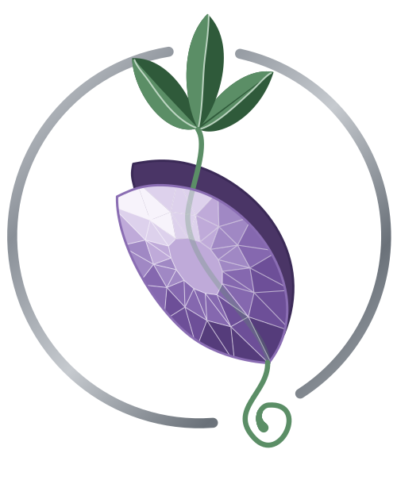

Por onde você quer entrar?
Canções com letras minhas. A primeira, Meu Espaço Seguro, já saiu, com clipe.
Ilustração, papelaria e a série Liebe Amazônia.
Quem eu sou e como trabalho com inteligência artificial.
